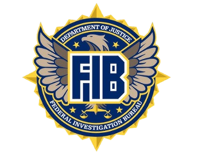

Centro de Formación Federal y Liderazgo Policial
Director: Christopher Wray
La historia de la FIB National Academy de San Andreas se remonta a comienzos de la década de 1970, cuando el Federal Investigation Bureau (FIB) enfrentaba uno de los periodos más complejos de su existencia debido al incremento del crimen organizado, la corrupción pública, el terrorismo doméstico y la creciente sofisticación de las organizaciones criminales que operaban dentro y fuera del estado. En ese contexto, la dirección del Bureau concluyó que las metodologías tradicionales de entrenamiento ya no eran suficientes para preparar a los agentes federales y mandos policiales frente a las nuevas amenazas emergentes.
Tras varios estudios internos y recomendaciones emitidas por altos funcionarios del Departamento de Justicia de San Andreas, el Directorado del FIB autorizó la creación de una academia federal permanente dedicada a la formación avanzada, liderazgo estratégico y cooperación interagencial. El proyecto fue concebido no solo como un centro de entrenamiento para agentes especiales del FIB, sino también como un espacio donde oficiales de diferentes agencias policiales pudieran compartir conocimientos, desarrollar doctrinas comunes y fortalecer la coordinación operativa a nivel estatal y federal.
La construcción de las primeras instalaciones comenzó en 1977 dentro de un complejo federal ubicado en las afueras de San Andreas, aprovechando terrenos utilizados anteriormente para entrenamiento táctico y ejercicios de seguridad nacional. El diseño de la academia estuvo influenciado por instalaciones militares y centros de formación federal, incorporando aulas especializadas, laboratorios forenses, polígonos de tiro, pistas tácticas y áreas destinadas a simulaciones de incidentes críticos.
La FIB National Academy abrió oficialmente sus puertas a principios de 1979 con una primera promoción compuesta por agentes del FIB, detectives de homicidios, supervisores policiales y oficiales de unidades especiales provenientes de distintos departamentos de San Andreas. El programa original estaba enfocado principalmente en liderazgo, investigaciones criminales complejas y administración de operaciones federales, aunque rápidamente se expandió para incluir ciencias forenses, inteligencia criminal, negociación de crisis y tácticas avanzadas de aplicación de la ley.
Durante la década de 1980, la academia adquirió una enorme importancia estratégica tras el incremento de amenazas terroristas y el fortalecimiento de las capacidades tácticas del FIB. Nuevos programas de entrenamiento fueron desarrollados en conjunto con unidades militares y equipos federales de élite, permitiendo a la institución incorporar formación en contraterrorismo, respuesta a incidentes críticos, manejo de rehenes y coordinación interagencial durante situaciones de emergencia nacional.
A medida que el Bureau modernizaba sus capacidades tecnológicas y operativas en los años noventa y dos mil, la National Academy también evolucionó para incluir programas de ciberseguridad, análisis de inteligencia, vigilancia electrónica, psicología criminal y liderazgo en operaciones de seguridad nacional. La academia comenzó además a recibir participantes internacionales y representantes de agencias aliadas, consolidando su reputación como uno de los centros de formación policial y federal más prestigiosos del país.
Con el paso de las décadas, miles de agentes especiales, supervisores y comandantes policiales pasaron por las aulas de la FIB National Academy. Muchos de ellos ocuparon posteriormente cargos de liderazgo dentro del FIB, departamentos policiales metropolitanos, oficinas del Sheriff y organismos de inteligencia federal.
Actualmente, la FIB National Academy de San Andreas es considerada un símbolo del profesionalismo y la excelencia operacional del Bureau. Su historia está profundamente ligada a la evolución moderna de las fuerzas federales de seguridad y a la preparación de generaciones de agentes encargados de proteger a San Andreas frente a amenazas criminales, terroristas y de seguridad nacional.
La misión de la FIB National Academy es formar, capacitar y desarrollar líderes de excelencia dentro del Federal Investigation Bureau (FIB) y las fuerzas del orden de San Andreas, proporcionando entrenamiento avanzado, educación profesional y preparación estratégica frente a las amenazas criminales y de seguridad nacional más complejas.
La academia tiene como objetivo fortalecer las capacidades operativas, investigativas y de liderazgo de agentes especiales, supervisores y oficiales seleccionados mediante programas intensivos enfocados en investigaciones criminales, inteligencia, contraterrorismo, ciencias forenses, manejo de crisis y coordinación interagencial.
Asimismo, la FIB National Academy promueve los más altos estándares de ética, profesionalismo e integridad dentro de las fuerzas del orden, fomentando la cooperación entre agencias locales, estatales, federales e internacionales para mejorar la seguridad pública y la capacidad de respuesta ante incidentes críticos.
A través de entrenamiento especializado, simulaciones tácticas, desarrollo ejecutivo y educación continua, la academia prepara a sus participantes para liderar operaciones complejas, enfrentar amenazas emergentes y servir como referentes de excelencia dentro de sus respectivas instituciones.
La FIB National Academy también busca fortalecer la colaboración profesional y el intercambio de conocimientos entre organismos de seguridad, consolidándose como uno de los principales centros de formación federal y liderazgo policial en San Andreas.